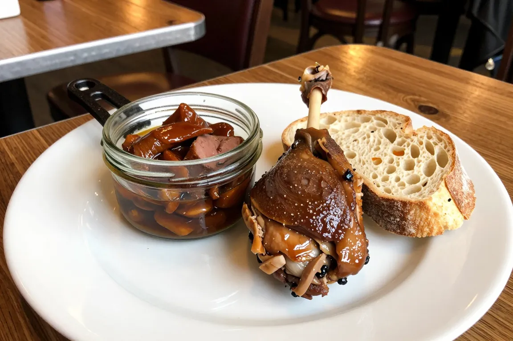

En kokk fra et palassjøkken lager mat til bistropris. Yves Camdeborde åpnet La Régalade i Paris i 1992 med fast meny, ærlige råvarer, regionale retter og store porsjoner, i et enkelt rom uten duk og seremoni.

Kjerneidé
God mat trenger ikke noe palass: en utdannet kokk kan servere fine råvarer og presis teknikk i et enkelt rom til en rimelig pris.
Designprinsipper
Sett en fast meny på tre retter til lav pris, med et valg mellom noen få retter for hver rett.
Skriv menyen på en tavle, og endre den med markedet.
Lag retter fra de franske provinsene med ferdighetene fra et hotellkjøkken: confit, terrine, braisert kjøtt og gryterett.
Server en raus porsjon som metter en sulten gjest.
Sett en terrine eller en krukke rillettes på bordet ved start, og la gjestene forsyne seg selv.
Bruk rimelige stykker og innmat med omhu: kinn, svinelabb, tunge og bog.
Anret på en enkel tallerken eller i kokekaret, og bruk ingen formell servering.
Plasser gjestene tett i et rom med bar, bare bord og en kort vinliste.
Antimønstre
En hvit duk og en servitør i jakke
En liten porsjon på en stor tallerken
En lang smaksmeny til høy pris
En rett laget med skum, gel eller flytende nitrogen